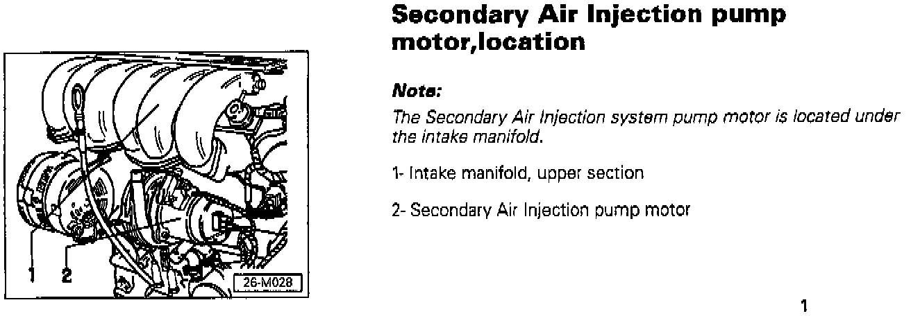

Secondary Air Injection System - Pump Location
Group: 26Number: 97-02
Date: May 21, 1997
File this Technical Bulletin in Repair Manual No: W42 011 294 107
Subject:
Secondary Air Injection System Pump, Location
Model(s):
Golf/Jetta with 2.8 Liter VR6 1997 -->
(Engine Code AAA)
This bulletin contains new information that applies to Repair Group 26 that will be integrated into the next Repair Manual printing.
This Technical Bulletin MUST be filed in the Repair Manual listed above.

Secondary Air Injection pump motor, location